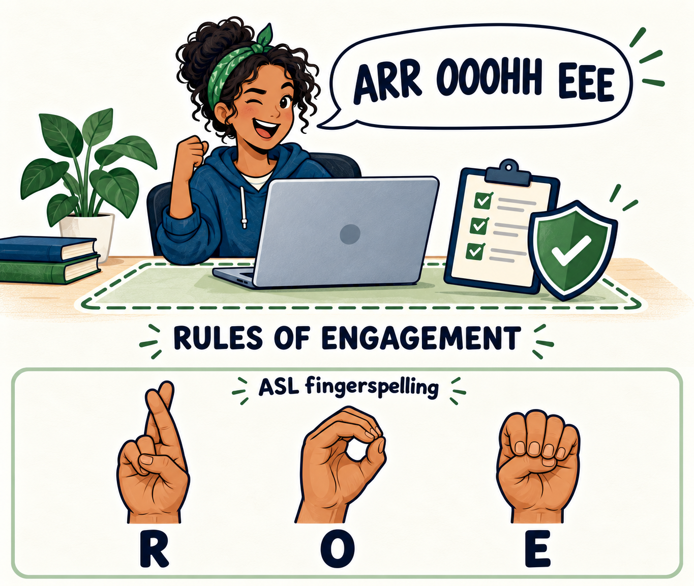

Before we start, repeat this out loud: “ARR OOOHH EEE”.
That is our reminder for R · O · E: Rules Of Engagement. You may say the letters aloud, fingerspell them in ASL, or read them silently. The way you remember them is your choice; understanding and following the rules is required.
ROE comes before every security-testing activity. Before sending a request, running a tool, reproducing a vulnerability, or testing a fix, establish authorization, scope, allowed methods, and how you will protect people and information. Check the rules again when the target, method, or scope changes.
The reminder is: Am I authorized, is this in scope, and what must I protect?

The graphic shows the acronym R–O–E fingerspelled in ASL, one letter after another. This spells the letters; it is not a separate ASL sign for the phrase “rules of engagement.” For a reference demonstration, see ASL University’s fingerspelling alphabet.
Why this matters
A security test can change data, interrupt a service, or expose information. The same request that is appropriate in your assigned lab can cause harm when sent to a system outside the exercise. Rules of engagement identify the systems, methods, and limits agreed upon before testing begins.
In this course, your personal TechCorp portal is a deliberately vulnerable practice application. You can investigate and repair its assigned defects within the task's scope. That permission does not extend to another student's copy, college systems, Google infrastructure, or a public website. Being able to reach a system does not establish permission to test it.
Beyond technical safety
Rules of engagement protect people as well as systems. They establish consent, ethical responsibility, accountability, and professional conduct. Before work begins, the people responsible for the system agree on what may be tested, how information will be handled, when testing must stop, and how findings will be reported.
A test can expose private information, consume someone's time, disrupt their work, or damage trust without crashing a server or changing a database. Avoiding technical damage is only part of responsible practice.
- Consent: permission comes from someone authorized to grant it and applies to the agreed work. Access to a system is not consent to test it.
- Privacy: seeing information during an exercise does not give you permission to keep it, share it, or use it for another purpose.
- Accountability: keep accurate records, disclose assistance, report mistakes, and explain the decisions you made.
- Professional conduct: respect other people's work and time. Follow the agreed reporting process and stop when the activity exceeds the scope.
The course rules
- Use your assigned target. Test your own TechCorp portal copy for the current exercise. Do not direct requests or payloads at another student's environment or another system.
- Stay within the assignment. Read the task's rules before reproducing a defect. Use the specified inputs and methods, and ask the instructor if the scope is unclear.
- Test by hand in Cloud Shell. Use the browser or individual
curlrequests as taught in the course. Do not run automated scanners or attack tools there, including against your own copy. For Module 07, analyze the scan evidence supplied by the instructor. - Use demo data. Keep real personal information, real passwords, credentials, and private records out of the portal, screenshots, reports, and AI conversations.
- Review AI suggestions before using them. AI may help generate or explain code on permitted work. It does not authorize a target or expand the exercise. Explain a proposed command and its effects before running it.
- Keep accurate evidence. Record the results you actually observed. Distinguish a proposed test or expected outcome from a completed test. Canvas submissions preserve the finished work.
- Stop when something unexpected happens. If a request reaches an unfamiliar target, reveals real data, or affects another person, stop testing and contact the instructor through Canvas Inbox. Share only the information needed to describe the issue.
Do the R · O · E check
Before a hands-on step, answer these three questions:
- Authorization: Is this my assigned portal copy, and does the exercise permit this action?
- Scope: Does this input or command serve the current task, using an allowed method?
- Protection: Am I using demo data, protecting other people's information, and recording honest results?
If any answer is uncertain, pause and ask. Resolve the uncertainty before sending the request.
Check your judgment
Scenario: An AI assistant proposes an automated scan of your own Cloud Shell portal to find more defects. The target is yours. Is the scan permitted?
Answer: No. The target is within your lab, but the method is outside the course rules for Cloud Shell. Use the assignment's manual tests. In Module 07, work from the instructor's supplied scan evidence. Authorization covers both the target and the method.
Scenario: Your manual test fails and the AI suggests deleting a folder you do not recognize. What comes next?
Answer: Identify the folder and understand the command's effects before using it. Ask for an explanation or contact the instructor if the purpose is unclear. A tool's suggestion does not establish that a destructive action is appropriate.
Scenario: You prove a flaw in your own portal, then include a classmate's private message in a public post to make your report more convincing. Your test caused no technical damage. Is the post appropriate?
Answer: No. Permission to perform a lab exercise does not authorize sharing another person's private communication. Use your own demo data and evidence, and report through the agreed course channels. Privacy and professional conduct remain part of the work after testing ends.
Where to go next
The Working in Google Cloud Shell page has the setup and returning-student buttons. The syllabus, Course Materials, Software & Technology Requirements, and each assignment provide the conditions that apply to your work. Read this page before the first hands-on exercise and return to it whenever the target or method changes.